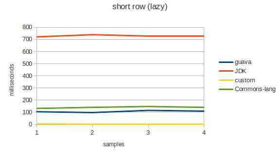
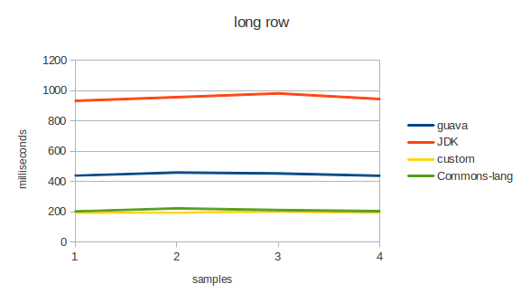
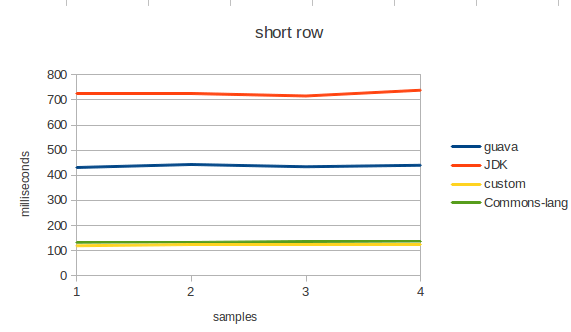
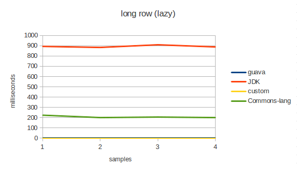

Split Performance
В одном из проектов в очередной раз пришлось писать собственную реализацию split строки, в связи с этим заинтересовался о производительности различных решений.
Для тестирования выбраны следующие кандидаты:
- JDK
- Guava
- Apache commons-lang
- Custom
Проводилось тестирование следующих параметров в различных комбинациях: короткая строка большое количество итераций, длинная строка малое количество итераций.
Поскольку Guava поддерживает lazy вычисление, то была добавлена ещё одна комбинация: отложенная итерация по результатам и непосредственная итерация.
В результате получились следующие значения:
   
Выводы:
- Стабильно плохой результат показывает Pattern.split. Он генерирует множество объектов, да и слишком общий для решения такой частной задачи. Использования паттерна это достаточно большой overhead.
для не lazy тестов google guava показывает достаточно плохой результат. Видимо это связано с количеством мусора который генерирует библиотека. В исходных кодах можно найти следующие конструкции:
String description = new StringBuilder(“CharMatcher.is(”)
.append(Integer.toHexString(match))
.append(“)”)
.toString();
return new CharMatcher(description) {…};Заметное отставание даёт commons-lang на lazy итерациях. Наверное потому, что они не поддерживаются.
Как всегда победителем становится собственная реализация.
Выводы 2:
Как говорят в google guava: “Знайте свои библиотеки”. Даже знаменитые библиотеки иногда могут быть написаны очень коряво. В частности в guava лежат очень много здравых идей, например, “везде возвращать Iterable” для lazy обхода. Это очень мощная идея, о которой я раньше не догадывался. Однако реализация очень сильно страдает от большого количество “как-бы” функционального кода, который в java сильно ударяет по производительности.